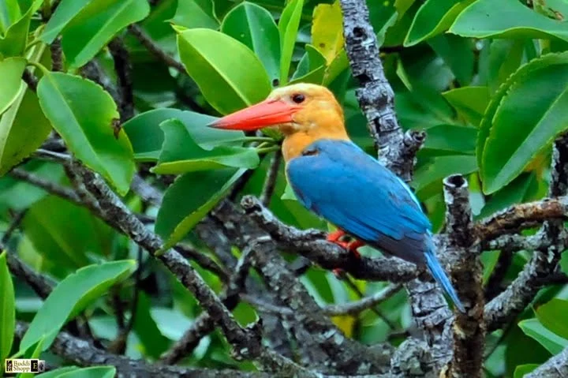
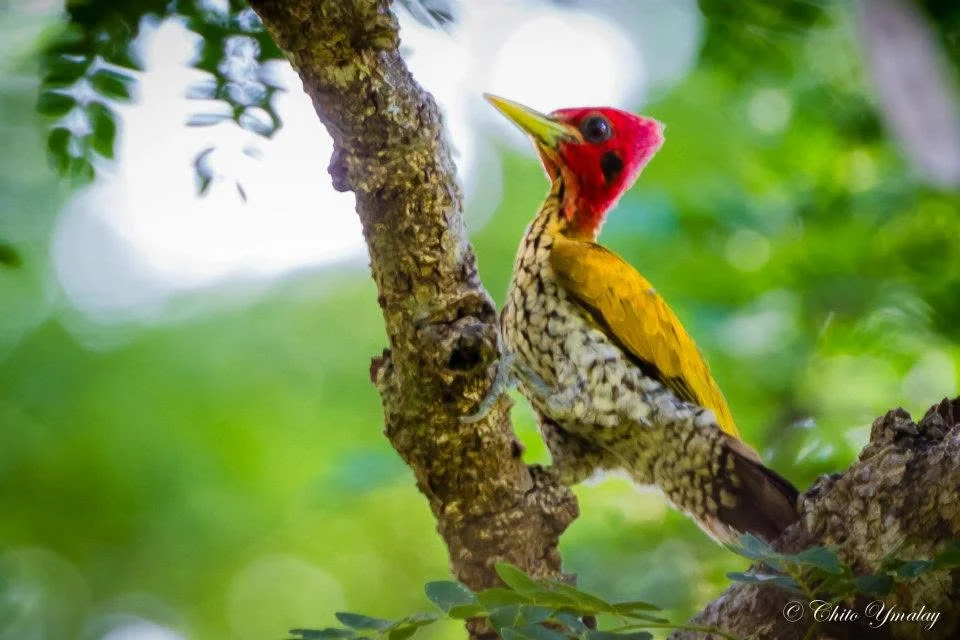
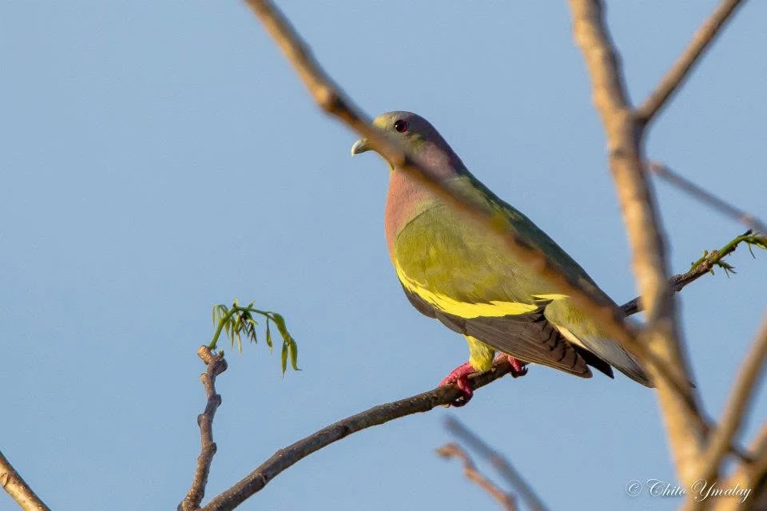
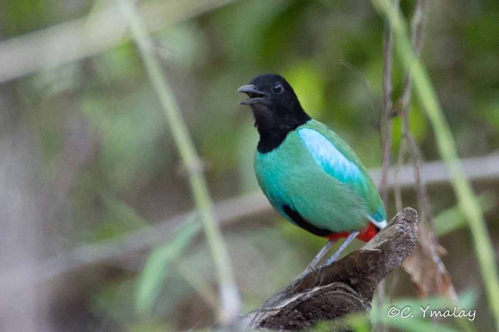
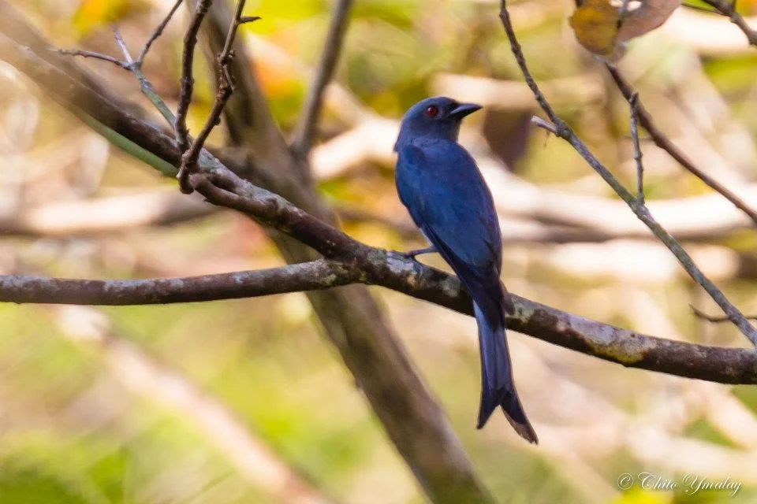
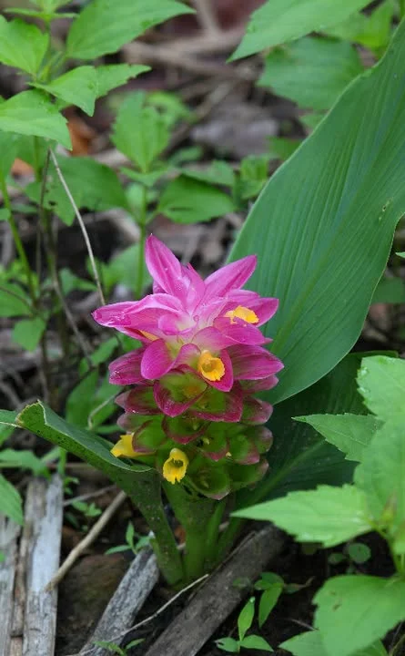

BIODIVERSITY HAVEN
Wildlife is part of the landscape, not a backdrop.
Discover the birds, plants, and wildlife habitats that make Kingfisher Park a biodiversity haven.
BIODIVERSITY HAVEN
A closer look at the life around the park.
Browse photographs of birds, plants and habitats recorded in the Kingfisher Park collection. Select a category, then use the arrows or swipe to explore.
Wildlife encounters depend on natural conditions. Species names are shown only when verified.
DISCOVER THE COLLECTION
Explore the park, one photograph at a time.





Observe without disturbing the habitat. Natural sightings vary with the time of day and conditions.
RESPONSIBLE VIEWING
Enjoy wildlife without turning nature into a guarantee.
Wildlife sightings depend on natural conditions. Observe animals from a respectful distance and follow the guidance of park staff.
KNOW BEFORE YOU GO